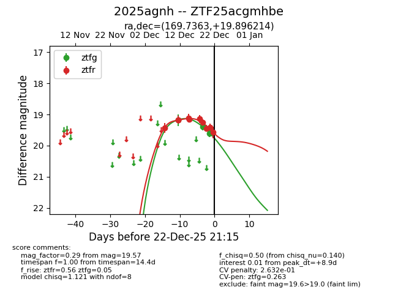
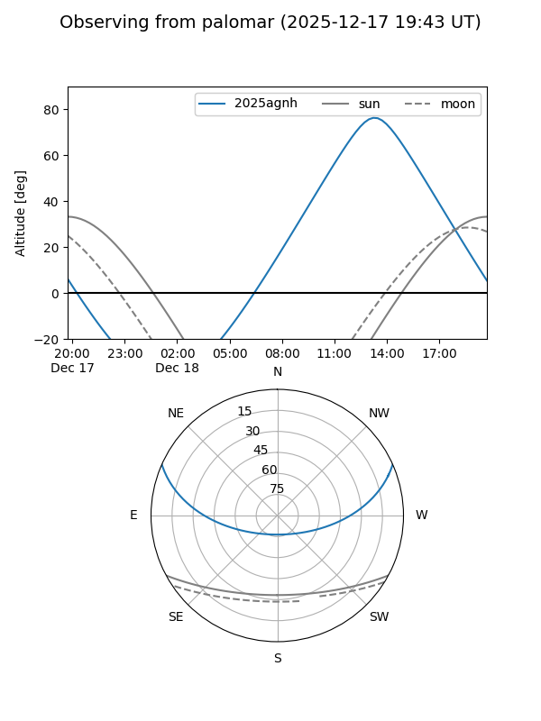
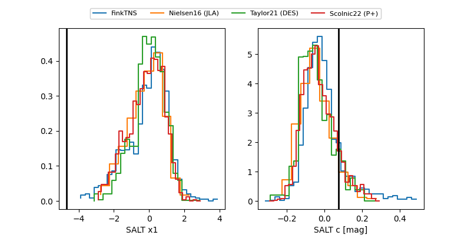

2025agnh
Target 2025agnh at 2025-12-24 16:17
Aliases and brokers:
FINK: fink-portal.org/ZTF25acgmhbe
Lasair: lasair-ztf.lsst.ac.uk/objects/ZTF25acgmhbe
ALeRCE: alerce.online/object/ZTF25acgmhbe
TNS: wis-tns.org/object/2025agnh
YSE: ziggy.ucolick.org/yse/transient_detail/2025agnh
alt names
ZTF25acgmhbe (ztf,fink_ztf)
2025agnh (tns,yse)
Coordinates:
equatorial (ra, dec) = 169.7363,+19.89621
equatorial (HMS+DMS) = 11:18:56.71,+19:53:46.37
galactic (l, b) = (226.8403,+67.64016)
Flags:
likely cv
Photometry:
last ztfg=19.60, ztfr=19.57
2 ztfg, 10 ztfr detections
Lightcurve

Visibility


Additional plots
